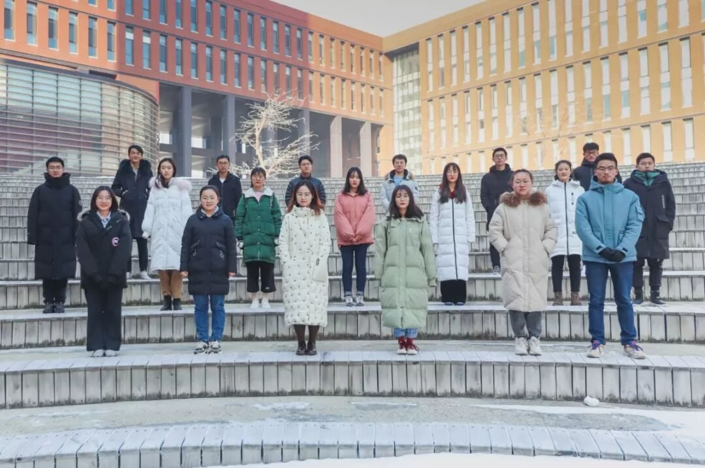
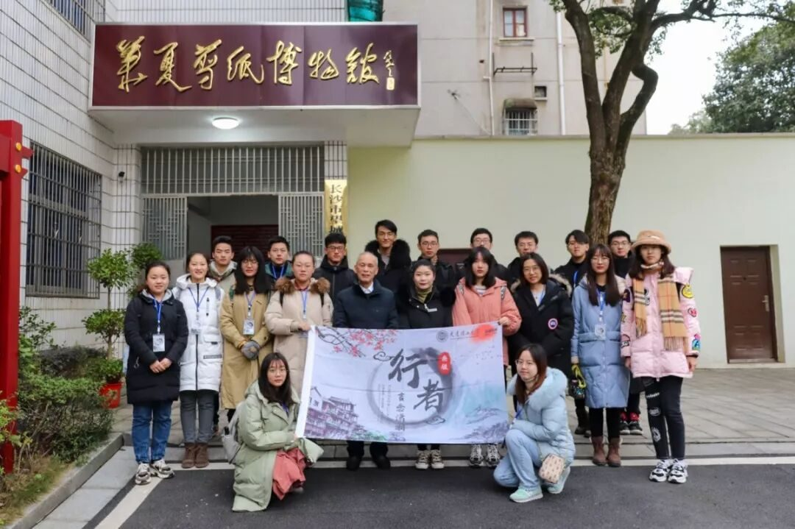
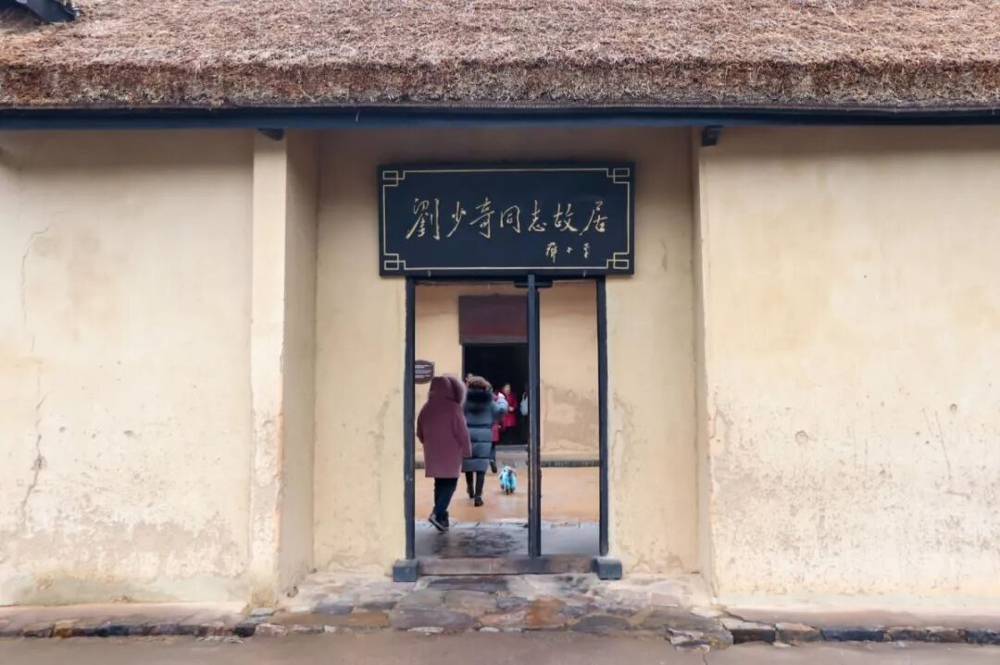
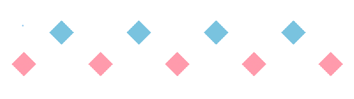
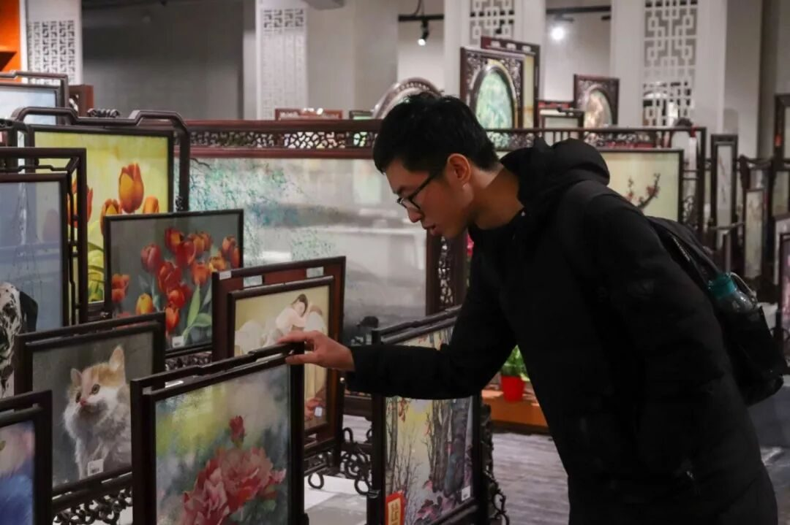
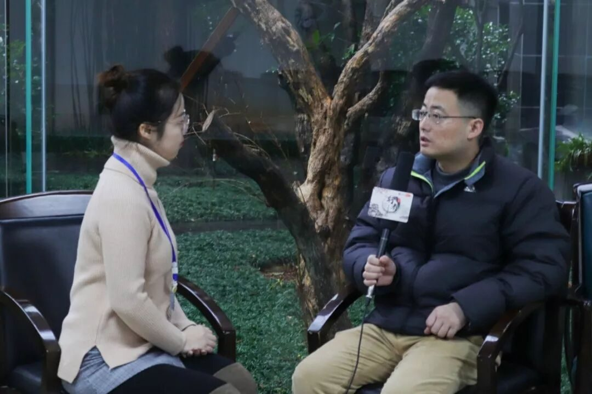
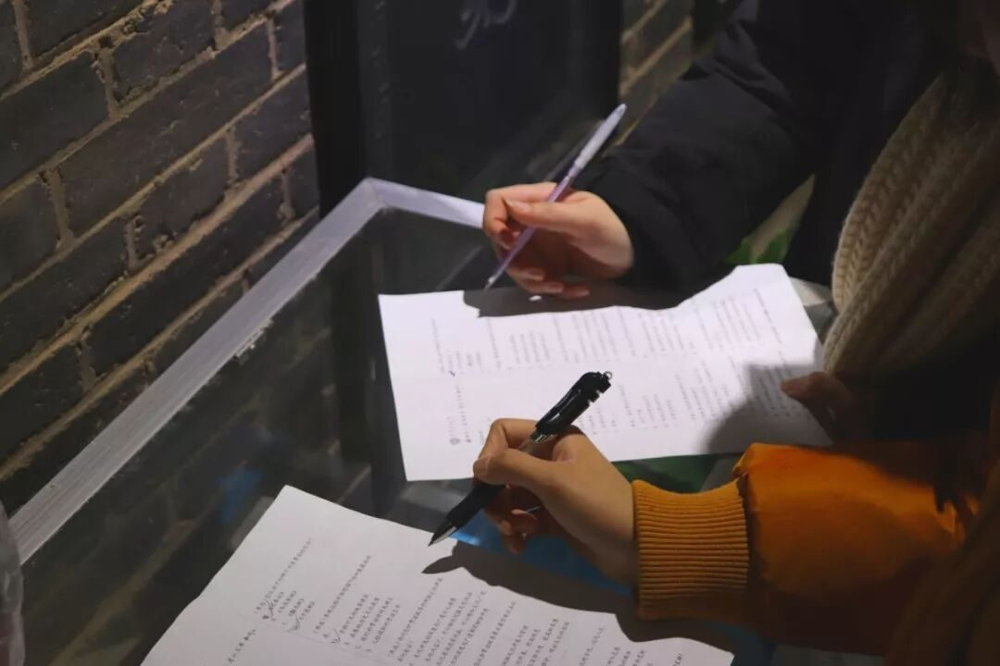
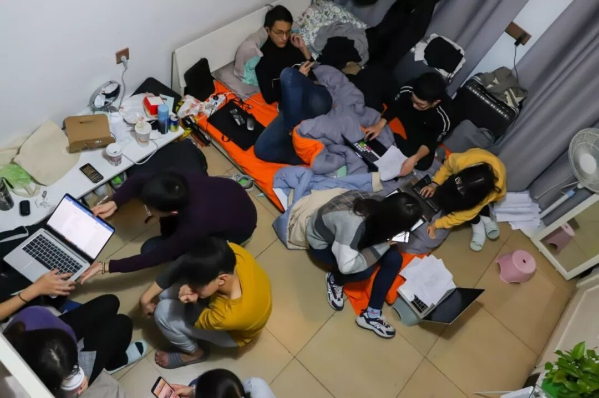
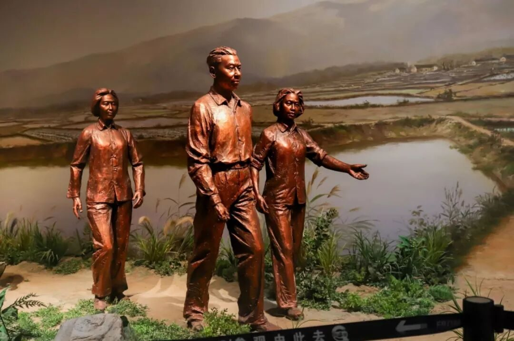
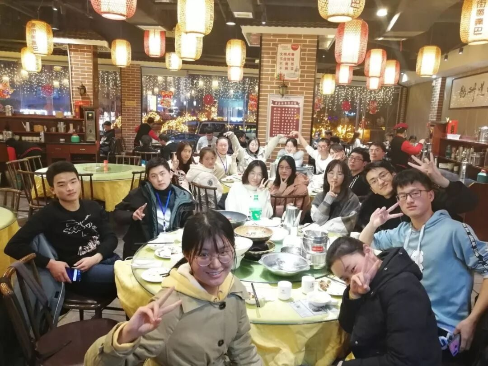

【赋墨沉湘·十】虚步漫行，步履不停。

虚步慢行 步履不停
这里是古代的屈贾之乡、楚汉名城，近代的维新运动、新民主主义革命发祥地，现代的历史文化名城、中南中心城市。长沙自古至今，有兴盛，有衰落，依然在这片土地发出自己的声音，保留独属于自己的湖湘文化。




湖湘文化的文化调研应该怎样进行？
在不同时期我会有不同方式。
是两眼茫然，大脑空白？
是侃侃而谈，心飞别处？
还是由浅入深，细细品味？
在三期行者之旅中，我最大的收获，不再单单是对某一种文化的些许感悟，而是对文化的感悟方式，通过自己的思考，找寻自我认同的答案。




在团队中作为调研组的一员，我对湖湘文化的体悟少一些感性认识，多一些理性思考。问卷制作的集思广益，问卷分析的数据处理，报告撰写的深刻思考，这一切，让我的文化调研之行，不再浮于表面，能够静下心来，去记录行程的所思所想。
当然，每晚的团队会议，从大家集思广益、鞭辟入里的分析和讨论中，一张崭新的蓝图在我眼前铺展开来，前进的方向逐渐明朗，思维的火花在这间狭小的民宿中交汇碰撞。这便是我所期望的团队——各抒己见、和而不同，每个人都有自己的理解和思考。自己在其中也是收获满满。

☆☆☆☆☆☆☆☆☆
湖湘文化对精英人物培养让我印象深刻。湖南作为贯通南北，连接东西的交通要冲，是新旧思想撞击、中西文化交融的场所，三次文化的融合，洋务运动、辛亥革命、新文化运动，为湖南在思想解放、对外开放等方面走到时代的前列提供了契机。它蕴含的“经世致用”的务实精神，强烈的参政意识，强烈的民族情节和爱国情操，勇敢尚武的献身精神，与时俱进的创新精神等方面，体现了一种强烈的“以天下为己任”的责任感与使命感。凡此种种,酿就了湖湘人在近现代中,活跃于中国历史舞台上所必须的能量，它在必需的时候焕发出灿烂的火花。



END
从去年的寒假到现在，在行者无疆的时间，已经是整整一年。这段时间，比起大家共同调研千年历史，只是一瞬间，但比起我经历的短短时光，这里有深刻丰富的记忆。“我不知道将去何方，但我已在路上。”行者的行程，不将最终结果视为唯一价值标准，走在路上，用心体会文化调研的过程和感悟，更是追寻的另一种意义。


拍摄于
湖南长沙
来源 | 行者无疆实践团
文字 | 陈子健
排版 | 康艳虎
审核 | 段智然 康艳虎 黄玲
行者无疆实践团
QQ：2758025831

随行者一起认识世界
长按二维码